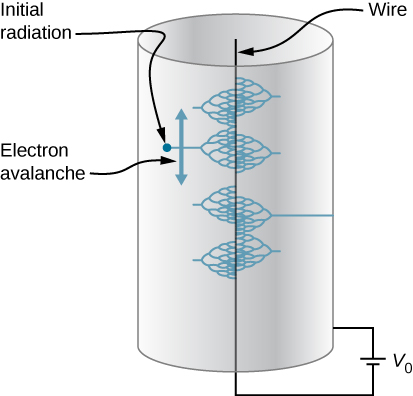
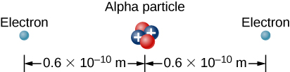
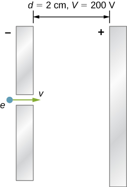

By the end of this section, you will be able to:
The study of electrostatics has proven useful in many areas. This module covers just a few of the many applications of electrostatics.
Van de Graaff generators (or Van de Graaffs) are not only spectacular devices used to demonstrate high voltage due to static electricity—they are also used for serious research. The first was built by Robert Van de Graaff in 1931 (based on original suggestions by Lord Kelvin) for use in nuclear physics research. [link] shows a schematic of a large research version. Van de Graaffs use both smooth and pointed surfaces, and conductors and insulators to generate large static charges and, hence, large voltages.
A very large excess charge can be deposited on the sphere because it moves quickly to the outer surface. Practical limits arise because the large electric fields polarize and eventually ionize surrounding materials, creating free charges that neutralize excess charge or allow it to escape. Nevertheless, voltages of 15 million volts are well within practical limits.
Most copy machines use an electrostatic process called xerography—a word coined from the Greek words xeros for dry and graphos for writing. The heart of the process is shown in simplified form in [link].
A selenium-coated aluminum drum is sprayed with positive charge from points on a device called a corotron. Selenium is a substance with an interesting property—it is a photoconductor. That is, selenium is an insulator when in the dark and a conductor when exposed to light.
In the first stage of the xerography process, the conducting aluminum drum is grounded so that a negative charge is induced under the thin layer of uniformly positively charged selenium. In the second stage, the surface of the drum is exposed to the image of whatever is to be copied. In locations where the image is light, the selenium becomes conducting, and the positive charge is neutralized. In dark areas, the positive charge remains, so the image has been transferred to the drum.
The third stage takes a dry black powder, called toner, and sprays it with a negative charge so that it is attracted to the positive regions of the drum. Next, a blank piece of paper is given a greater positive charge than on the drum so that it will pull the toner from the drum. Finally, the paper and electrostatically held toner are passed through heated pressure rollers, which melt and permanently adhere the toner to the fibers of the paper.
Laser printers use the xerographic process to make high-quality images on paper, employing a laser to produce an image on the photoconducting drum as shown in [link]. In its most common application, the laser printer receives output from a computer, and it can achieve high-quality output because of the precision with which laser light can be controlled. Many laser printers do significant information processing, such as making sophisticated letters or fonts, and in the past may have contained a computer more powerful than the one giving them the raw data to be printed.
The ink jet printer, commonly used to print computer-generated text and graphics, also employs electrostatics. A nozzle makes a fine spray of tiny ink droplets, which are then given an electrostatic charge ([link]).
Once charged, the droplets can be directed, using pairs of charged plates, with great precision to form letters and images on paper. Ink jet printers can produce color images by using a black jet and three other jets with primary colors, usually cyan, magenta, and yellow, much as a color television produces color. (This is more difficult with xerography, requiring multiple drums and toners.)
Electrostatic painting employs electrostatic charge to spray paint onto oddly shaped surfaces. Mutual repulsion of like charges causes the paint to fly away from its source. Surface tension forms drops, which are then attracted by unlike charges to the surface to be painted. Electrostatic painting can reach hard-to-get-to places, applying an even coat in a controlled manner. If the object is a conductor, the electric field is perpendicular to the surface, tending to bring the drops in perpendicularly. Corners and points on conductors will receive extra paint. Felt can similarly be applied.
Another important application of electrostatics is found in air cleaners, both large and small. The electrostatic part of the process places excess (usually positive) charge on smoke, dust, pollen, and other particles in the air and then passes the air through an oppositely charged grid that attracts and retains the charged particles ([link])
Large electrostatic precipitators are used industrially to remove over of the particles from stack gas emissions associated with the burning of coal and oil. Home precipitators, often in conjunction with the home heating and air conditioning system, are very effective in removing polluting particles, irritants, and allergens.
| Potential energy of a two-charge system | |
| Work done to assemble a system of charges | |
| Potential difference | |
| Electric potential | |
| Potential difference between two points | |
| Electric potential of a point charge | |
| Electric potential of a system of point charges | |
| Electric dipole moment | |
| Electric potential due to a dipole | |
| Electric potential of a continuous charge distribution | |
| Electric field components | |
| Del operator in Cartesian coordinates | |
| Electric field as gradient of potential | |
| Del operator in cylindrical coordinates | |
| Del operator in spherical coordinates |
Why are the metal support rods for satellite network dishes generally grounded?
So that lightning striking them goes into the ground instead of the television equipment.
(a) Why are fish reasonably safe in an electrical storm? (b) Why are swimmers nonetheless ordered to get out of the water in the same circumstance?
What are the similarities and differences between the processes in a photocopier and an electrostatic precipitator?
They both make use of static electricity to stick small particles to another surface. However, the precipitator has to charge a wide variety of particles, and is not designed to make sure they land in a particular place.
About what magnitude of potential is used to charge the drum of a photocopy machine? A web search for “xerography” may be of use.
(a) What is the electric field 5.00 m from the center of the terminal of a Van de Graaff with a 3.00-mC charge, noting that the field is equivalent to that of a point charge at the center of the terminal? (b) At this distance, what force does the field exert on a charge on the Van de Graaff’s belt?
(a) What is the direction and magnitude of an electric field that supports the weight of a free electron near the surface of Earth? (b) Discuss what the small value for this field implies regarding the relative strength of the gravitational and electrostatic forces.
a. ;
The electric field is towards the surface of Earth. b. The coulomb force is much stronger than gravity.
A simple and common technique for accelerating electrons is shown in [link], where there is a uniform electric field between two plates. Electrons are released, usually from a hot filament, near the negative plate, and there is a small hole in the positive plate that allows the electrons to continue moving. (a) Calculate the acceleration of the electron if the field strength is . (b) Explain why the electron will not be pulled back to the positive plate once it moves through the hole.
In a Geiger counter, a thin metallic wire at the center of a metallic tube is kept at a high voltage with respect to the metal tube. Ionizing radiation entering the tube knocks electrons off gas molecules or sides of the tube that then accelerate towards the center wire, knocking off even more electrons. This process eventually leads to an avalanche that is detectable as a current. A particular Geiger counter has a tube of radius R and the inner wire of radius a is at a potential of volts with respect to the outer metal tube. Consider a point P at a distance s from the center wire and far away from the ends. (a) Find a formula for the electric field at a point P inside using the infinite wire approximation. (b) Find a formula for the electric potential at a point P inside. (c) Use and find the value of the electric field at a point 1.00 cm from the center.
We know from the Gauss’s law chapter that the electric field for an infinite line charge is , and from earlier in this chapter that the potential of a wire-cylinder system of this sort is by integration. We are not given , but we are given a fixed ; thus, we know that and hence . We may substitute this back in to find a. ; b. ; c.
The practical limit to an electric field in air is about . Above this strength, sparking takes place because air begins to ionize. (a) At this electric field strength, how far would a proton travel before hitting the speed of light (ignore relativistic effects)? (b) Is it practical to leave air in particle accelerators?
To form a helium atom, an alpha particle that contains two protons and two neutrons is fixed at one location, and two electrons are brought in from far away, one at a time. The first electron is placed at from the alpha particle and held there while the second electron is brought to from the alpha particle on the other side from the first electron. See the final configuration below. (a) How much work is done in each step? (b) What is the electrostatic energy of the alpha particle and two electrons in the final configuration?
a. ;
b.
Find the electrostatic energy of eight equal charges each fixed at the corners of a cube of side 2 cm.
The probability of fusion occurring is greatly enhanced when appropriate nuclei are brought close together, but mutual Coulomb repulsion must be overcome. This can be done using the kinetic energy of high-temperature gas ions or by accelerating the nuclei toward one another. (a) Calculate the potential energy of two singly charged nuclei separated by (b) At what temperature will atoms of a gas have an average kinetic energy equal to this needed electrical potential energy?
a. ;
b.
A bare helium nucleus has two positive charges and a mass of . (a) Calculate its kinetic energy in joules at of the speed of light. (b) What is this in electron-volts? (c) What voltage would be needed to obtain this energy?
An electron enters a region between two large parallel plates made of aluminum separated by a distance of 2.0 cm and kept at a potential difference of 200 V. The electron enters through a small hole in the negative plate and moves toward the positive plate. At the time the electron is near the negative plate, its speed is Assume the electric field between the plates to be uniform, and find the speed of electron at (a) 0.10 cm, (b) 0.50 cm, (c) 1.0 cm, and (d) 1.5 cm from the negative plate, and (e) immediately before it hits the positive plate.
a. ; b. ; c. ; d. ; e.
How far apart are two conducting plates that have an electric field strength of between them, if their potential difference is 15.0 kV?
(a) Will the electric field strength between two parallel conducting plates exceed the breakdown strength of dry air, which is , if the plates are separated by 2.00 mm and a potential difference of is applied? (b) How close together can the plates be with this applied voltage?
a. ;
b.
Membrane walls of living cells have surprisingly large electric fields across them due to separation of ions. What is the voltage across an 8.00-nm-thick membrane if the electric field strength across it is 5.50 MV/m? You may assume a uniform electric field.
A double charged ion is accelerated to an energy of 32.0 keV by the electric field between two parallel conducting plates separated by 2.00 cm. What is the electric field strength between the plates?
The temperature near the center of the Sun is thought to be 15 million degrees Celsius (or kelvin). Through what voltage must a singly charged ion be accelerated to have the same energy as the average kinetic energy of ions at this temperature?
A lightning bolt strikes a tree, moving 20.0 C of charge through a potential difference of (a) What energy was dissipated? (b) What mass of water could be raised from to the boiling point and then boiled by this energy? (c) Discuss the damage that could be caused to the tree by the expansion of the boiling steam.
a. ;
b. ;
c. The expansion of the steam upon boiling can literally blow the tree apart.
What is the potential from a proton (the average distance between the proton and electron in a hydrogen atom)?
(a) A sphere has a surface uniformly charged with 1.00 C. At what distance from its center is the potential 5.00 MV? (b) What does your answer imply about the practical aspect of isolating such a large charge?
a. ; b. A 1-C charge is a very large amount of charge; a sphere of 1.80 km is impractical.
What are the sign and magnitude of a point charge that produces a potential of –2.00 V at a distance of 1.00 mm?
In one of the classic nuclear physics experiments at the beginning of the twentieth century, an alpha particle was accelerated toward a gold nucleus, and its path was substantially deflected by the Coulomb interaction. If the energy of the doubly charged alpha nucleus was 5.00 MeV, how close to the gold nucleus (79 protons) could it come before being deflected?
The alpha particle approaches the gold nucleus until its original energy is converted to potential energy. , so
(Size of gold nucleus is about ).
A 12.0-V battery-operated bottle warmer heats 50.0 g of glass, of baby formula, and of aluminum from to . (a) How much charge is moved by the battery? (b) How many electrons per second flow if it takes 5.00 min to warm the formula? (Hint: Assume that the specific heat of baby formula is about the same as the specific heat of water.)
A battery-operated car uses a 12.0-V system. Find the charge the batteries must be able to move in order to accelerate the 750 kg car from rest to 25.0 m/s, make it climb a high hill, and finally cause it to travel at a constant 25.0 m/s while climbing with force for an hour.
(a) Find the voltage near a 10.0 cm diameter metal sphere that has 8.00 C of excess positive charge on it. (b) What is unreasonable about this result? (c) Which assumptions are responsible?
A uniformly charged half-ring of radius 10 cm is placed on a nonconducting table. It is found that 3.0 cm above the center of the half-ring the potential is –3.0 V with respect to zero potential at infinity. How much charge is in the half-ring?
A glass ring of radius 5.0 cm is painted with a charged paint such that the charge density around the ring varies continuously given by the following function of the polar angle Find the potential at a point 15 cm above the center.
A CD disk of radius () is sprayed with a charged paint so that the charge varies continually with radial distance r from the center in the following manner: .
Find the potential at a point 4 cm above the center.
(a) What is the final speed of an electron accelerated from rest through a voltage of 25.0 MV by a negatively charged Van de Graff terminal? (b) What is unreasonable about this result? (c) Which assumptions are responsible?
A large metal plate is charged uniformly to a density of . How far apart are the equipotential surfaces that represent a potential difference of 25 V?
Recall from the previous chapter that the electric field is uniform throughout space, and that for uniform fields we have for the relation. Thus, we get for the distance between 25-V equipotentials.
Your friend gets really excited by the idea of making a lightning rod or maybe just a sparking toy by connecting two spheres as shown in [link], and making so small that the electric field is greater than the dielectric strength of air, just from the usual 150 V/m electric field near the surface of the Earth. If is 10 cm, how small does need to be, and does this seem practical? (Hint: recall the calculation for electric field at the surface of a conductor from Gauss’s Law.)
(a) Find limit of the potential of a finite uniformly charged rod and show that it coincides with that of a point charge formula. (b) Why would you expect this result?
a. Take the result from [link], divide both the numerator and the denominator by x, take the limit of that, and then apply a Taylor expansion to the resulting log to get: ; b. which is the result we expect, because at great distances, this should look like a point charge of
A small spherical pith ball of radius 0.50 cm is painted with a silver paint and then of charge is placed on it. The charged pith ball is put at the center of a gold spherical shell of inner radius 2.0 cm and outer radius 2.2 cm. (a) Find the electric potential of the gold shell with respect to zero potential at infinity. (b) How much charge should you put on the gold shell if you want to make its potential 100 V?
Two parallel conducting plates, each of cross-sectional area , are 2.0 cm apart and uncharged. If electrons are transferred from one plate to the other, (a) what is the potential difference between the plates? (b) What is the potential difference between the positive plate and a point 1.25 cm from it that is between the plates?
a. ; b.
A point charge of is placed at the center of an uncharged spherical conducting shell of inner radius 6.0 cm and outer radius 9.0 cm. Find the electric potential at (a) (b) (c)
Earth has a net charge that produces an electric field of approximately 150 N/C downward at its surface. (a) What is the magnitude and sign of the excess charge, noting the electric field of a conducting sphere is equivalent to a point charge at its center? (b) What acceleration will the field produce on a free electron near Earth’s surface? (c) What mass object with a single extra electron will have its weight supported by this field?
a. ;
b. ;
c.
Point charges of are placed 0.500 m apart.
(a) At what point along the line between them is the electric field zero?
(b) What is the electric field halfway between them?
What can you say about two charges , if the electric field one-fourth of the way from is zero?
If the electric field is zero ¼ from the way of , then we know from
; the charge is 9 times larger than .
Calculate the angular velocity of an electron orbiting a proton in the hydrogen atom, given the radius of the orbit is . You may assume that the proton is stationary and the centripetal force is supplied by Coulomb attraction.
An electron has an initial velocity of in a uniform electric field. The field accelerates the electron in the direction opposite to its initial velocity. (a) What is the direction of the electric field? (b) How far does the electron travel before coming to rest? (c) How long does it take the electron to come to rest? (d) What is the electron’s velocity when it returns to its starting point?
a. The field is in the direction of the electron’s initial velocity.
b.
c.
d.
Three and three ions are placed alternately and equally spaced around a circle of radius 50 nm. Find the electrostatic energy stored.
Look up (presumably online, or by dismantling an old device and making measurements) the magnitude of the potential deflection plates (and the space between them) in an ink jet printer. Then look up the speed with which the ink comes out the nozzle. Can you calculate the typical mass of an ink drop?
Answers will vary. This appears to be proprietary information, and ridiculously difficult to find. Speeds will be 20 m/s or less, and there are claims of grams for the mass of a drop.
Use the electric field of a finite sphere with constant volume charge density to calculate the electric potential, throughout space. Then check your results by calculating the electric field from the potential.
Calculate the electric field of a dipole throughout space from the potential.
Apply with to the potential calculated earlier, with and assume that the axis of the dipole is aligned with the z-axis of the coordinate system. Thus, the potential is .